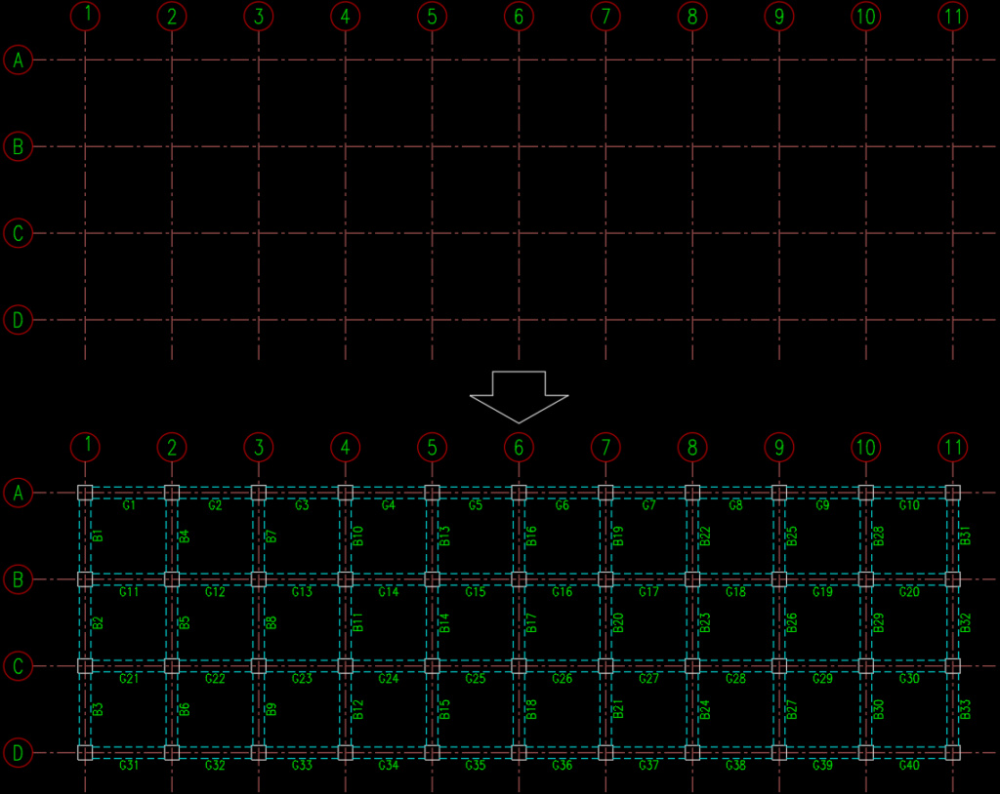

<p>程式操作說明：</p>
<p>1.交點插入圖塊</p>
<p>2.線全切斷</p>
<p>3.RC梁+文字</p>
<p>4.文字編號</p>
<div class="video-frame"><iframe src="https://www.youtube.com/embed/RNJjKAsp7ks" allow="accelerometer; autoplay; clipboard-write; encrypted-media; gyroscope; picture-in-picture" allowfullscreen loading="lazy"></iframe></div>
<p><b>YOUTUBE影片:</b></p>
<p><a href="https://youtu.be/RNJjKAsp7ks" target="_blank" rel="noopener">https://youtu.be/RNJjKAsp7ks</a></p>
